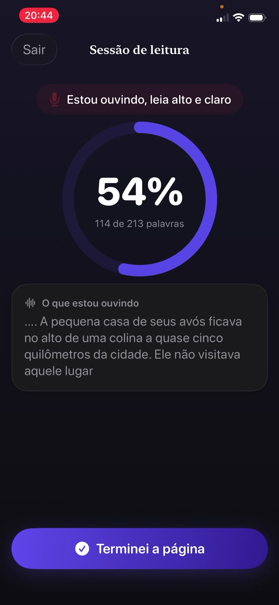

Importa porque é a ponte entre decodificar e compreender. Uma criança que gasta toda a atenção soletrando palavras não sobra nada para o sentido da frase. O exercício que constrói isso é simples, antigo e um pouco fora de moda: ler em voz alta, quase todo dia, por cerca de dez minutos.


As três partes da fluência
- Precisão. Ler as palavras que estão na página, não as que o formato sugere.
- Ritmo. Um passo de conversa. Devagar demais quebra a frase; correr costuma significar que a compreensão foi deixada para trás.
- Prosódia. Expressão e fraseado: pausar nas vírgulas, subir numa pergunta, dar voz a um personagem. É a parte que prova o entendimento.
Por que em voz alta, e por que para você
A leitura silenciosa esconde tudo. Uma criança pode passar os olhos por uma página durante dez minutos e não absorver nada, e nenhum dos dois ficaria sabendo.
Ler em voz alta torna o processo audível. Você ouve as palavras que ela pula, as que adivinha pela primeira letra, os lugares onde a frase se desfaz. É também a única versão em que um erro pode ser pego no momento em que acontece.
A rotina de dez minutos
- Escolha um livro um pouco abaixo do nível de frustração dela. A prática de fluência precisa de um texto que ela consiga ler quase inteiro, não de um que brigue com ela.
- Coloque um cronômetro de dez minutos para que o fim seja definido e não se negocie.
- Peça que leia em voz alta. Sente perto o bastante para ouvir, e resista a preencher os silêncios.
- Anote os erros sem interromper no meio da frase, a menos que o sentido se perca.
- No fim, faça uma pergunta de verdade sobre o que aconteceu. Uma. Não um questionário.
Como corrigir sem estragar
O instinto é pular em cima de cada erro. Não pule. A correção constante transforma a leitura numa apresentação que está sendo avaliada, e crianças abandonam aquilo em que estão sendo avaliadas.
Espere o fim da frase. Se o sentido sobreviveu ao erro, deixe passar. Se não sobreviveu, diga a palavra e siga sem explicação. Explicações ficam para depois, e principalmente para os erros que se repetem.
Acompanhar o progresso sem cronômetro
Palavras por minuto é o que as escolas medem, e é uma coisa ruim de perseguir em casa: crianças cronometradas aprendem a correr. O que você quer ver ao longo das semanas é um fraseado mais suave, menos tropeços nas mesmas palavras, e mais expressão.
Um registro simples do que foi lido e quando já basta. Ele diz se a prática está realmente acontecendo, que é a variável que mais importa.
Prática que mantém o próprio registro
O Guardian Reader escuta enquanto seu filho lê em voz alta as páginas digitalizadas e compara o que ouve com esse texto exato, mostrando uma porcentagem de correspondência ao vivo conforme ele avança. A nota mínima é ajustável, então uma criança aprendendo a ler não é medida pela régua de um adolescente.
Cada sessão é salva com a data, os minutos, as páginas e as palavras que foram realmente lidas, o que vira um retrato honesto da prática ao longo do ano letivo, sem ninguém precisar preencher uma tabela.